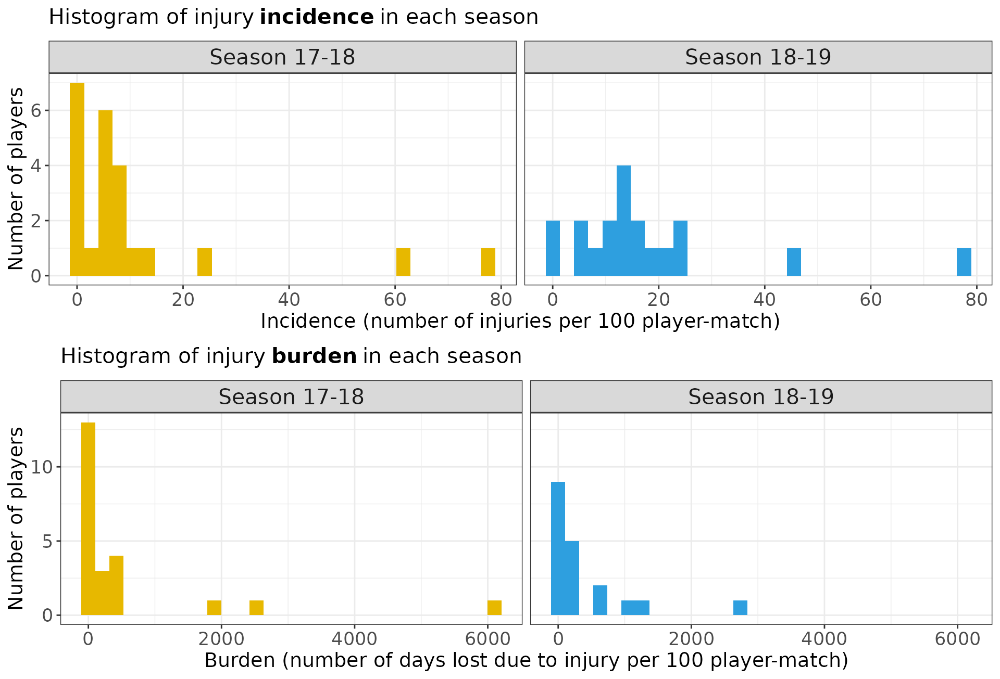
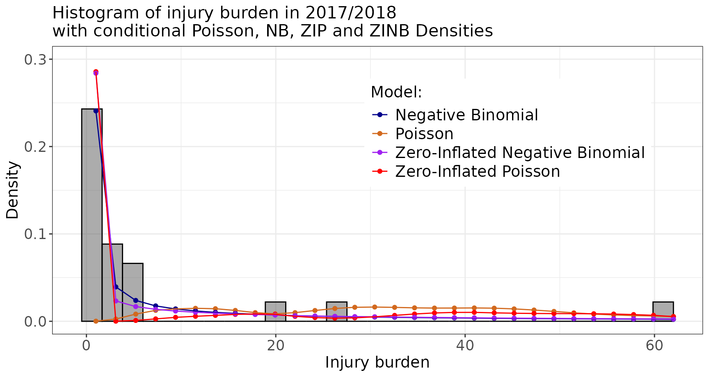

Model Sports Injuries as Counts
2024-05-23
Source:vignettes/model-injury-data-i.Rmd
model-injury-data-i.Rmd
library(injurytools)
library(dplyr)
library(stringr)
library(tidyr)
library(lme4)
library(pscl)
# library(glmmTMB)
library(MASS)
library(ggplot2)
library(gridExtra)
library(knitr)Example data: we continue exploring the cohort of Liverpool Football Club male’s first team players over two consecutive seasons, 2017-2018 and 2018-2019, scrapped from https://www.transfermarkt.com/ website1.
This article provides some modelling approaches when injuries are seen as count data.
First, the distribution of the count/rate variables is explored, e.g. number of injuries and number of days lost per exposure time. Afterwards, four different models are presented, that depending on the distribution of the data, will provide a better fit to them due to the distributional assumptions made by each of them.
Exploring the distribution of injuries
We plot the histograms of the injury incidence and injury burden variables for each season.
See the code to prepare the data
## 17/18
df_exposures1718 <- prepare_exp(df_exposures0 =
raw_df_exposures |> filter(season == "17/18"),
player = "player_name",
date = "year",
time_expo = "minutes_played") |>
mutate(seasonb = date2season(date))
df_injuries1718 <- prepare_inj(df_injuries0 =
raw_df_injuries |> filter(season == "17/18"),
player = "player_name",
date_injured = "from",
date_recovered = "until")
injd1718 <- prepare_all(data_exposures = df_exposures1718,
data_injuries = df_injuries1718,
exp_unit = "matches_minutes")
## 18/19
df_exposures1819 <- prepare_exp(df_exposures0 =
raw_df_exposures |> filter(season == "18/19"),
player = "player_name",
date = "year",
time_expo = "minutes_played") |>
mutate(seasonb = date2season(date))
df_injuries1819 <- prepare_inj(df_injuries0 =
raw_df_injuries |> filter(season == "18/19"),
player = "player_name",
date_injured = "from",
date_recovered = "until")
injd1819 <- prepare_all(data_exposures = df_exposures1819,
data_injuries = df_injuries1819,
exp_unit = "matches_minutes")
## calculate injury summary statistics
injds1718 <- injsummary(injd1718, quiet = T)
injds1819 <- injsummary(injd1819, quiet = T)
injds1718p <- injds1718$playerwise
injds1819p <- injds1819$playerwise
injdsp <- bind_rows("Season 17-18" = injds1718p,
"Season 18-19" = injds1819p,
.id = "season")
## plot
p1 <- ggplot(data = injdsp) +
geom_histogram(aes(x = injincidence, fill = season)) +
facet_wrap(~season) +
scale_fill_manual(name = "", values = c("#E7B800", "#2E9FDF")) +
ylab("Number of players") +
xlab("Incidence (number of injuries per 100 player-match)") +
ggtitle("Histogram of injury incidence in each season") +
theme(legend.position = "none")
p2 <- ggplot(data = injdsp) +
geom_histogram(aes(x = injburden, fill = season)) +
facet_wrap(~season) +
scale_fill_manual(name = "", values = c("#E7B800", "#2E9FDF")) +
ylab("Number of players") +
xlab("Burden (number of days lost due to injury per 100 player-match)") +
ggtitle("Histogram of injury burden in each season") +
theme(legend.position = "none")
grid.arrange(p1, p2, ncol = 1)Code for further plot specifications
theme_counts <- theme(axis.text = element_text(size = rel(1.2)),
axis.title = element_text(size = rel(1.3)),
strip.text = element_text(size = rel(1.4)),
plot.title = element_text(size = rel(1.4)),
legend.text = element_text(size = rel(1.3)),
legend.title = element_text(size = rel(1.3)))
p1 <- p1 + theme_counts
p2 <- p2 + theme_counts
In the following, we use injds1718p data.
- Poisson (mixed) model
We merge into the injds1718p data frame the
player-related information (i.e. positionb,
age, assists, goals,
yellows etc.) available in the
raw_df_exposures data frame.
## 17/18
df_exposures1718 <- prepare_exp(df_exposures0 =
raw_df_exposures |> filter(season == "17/18"),
player = "player_name",
date = "year",
time_expo = "minutes_played") |>
mutate(seasonb = date2season(date))
injds1718p <- injds1718p |>
mutate(seasonb = "2017/2018") |>
## join to have info, such as position, age, citizenship etc.
left_join(df_exposures1718, by = c("player" = "player",
"seasonb" = "seasonb")) |>
## create positionb column
## (so that the categories are: Attack, Defender, Goalkeeper and Midfield)
mutate(positionb = factor(str_split_i(position, "_", 1)))
## quit Goalkeepers
injds1718p <- dplyr::filter(injds1718p, positionb != "Goalkeeper") |>
droplevels()To fit a Poisson regression model for injury incidence (considering
positionb as a covariate), we do:
incidence_glm_pois <- glm(ninjuries ~ positionb, # + offset(log(totalexpo))
offset = log(totalexpo),
data = injds1718p,
family = poisson)Or alternatively, we can use the glmmTMB::glmmTMB
function:
# incidence_glm_pois2 <- glmmTMB(formula = ninjuries ~ foot,
# offset = log(totalexpo),
# family = poisson(), data = injds1718p)
# summary(incidence_glm_pois2)Besides, if we have repeated measurements as in injdsp,
we can fit a Mixed Model via:
Add more covariates to injdsp data frame
df_exposures <- prepare_exp(df_exposures0 = raw_df_exposures,
player = "player_name",
date = "year",
time_expo = "minutes_played") |>
mutate(seasonb = date2season(date))
injdsp <- injdsp |>
mutate(seasonb = if_else(season == "Season 17-18", "2017/2018", "2018/2019")) |>
## join to have info, such as position, age, citizenship etc.
left_join(df_exposures, by = c("player" = "player",
"seasonb" = "seasonb")) |>
## create positionb column
## (so that the categories are: Attack, Defender, Goalkeeper and Midfield)
mutate(positionb = factor(str_split_i(position, "_", 1))) |>
droplevels()
incidence_glmm_pois <- glmer(formula = ninjuries ~ positionb + (1 | player),
offset = log(totalexpo),
data = injdsp,
family = poisson)
# incidence_glmm_pois2 <- glmmTMB::glmmTMB(formula = ninjuries ~ positionb + (1 | player),
# offset = log(totalexpo),
# data = injdsp,
# family = poisson)We can do the analogue for the burden, e.g.:
burden_glm_pois <- glm(ndayslost ~ positionb, offset = log(totalexpo), ## or ~ foot
data = injds1718p,
family = poisson)As of now, lets stick with the model burden_glm_pois and
lets interpret the model output.
summary(burden_glm_pois)
#>
#> Call:
#> glm(formula = ndayslost ~ positionb, family = poisson, data = injds1718p,
#> offset = log(totalexpo))
#>
#> Coefficients:
#> Estimate Std. Error z value Pr(>|z|)
#> (Intercept) -3.81936 0.06651 -57.422 <2e-16 ***
#> positionbDefender -0.03227 0.08893 -0.363 0.717
#> positionbMidfield 1.01561 0.07780 13.054 <2e-16 ***
#> ---
#> Signif. codes: 0 '***' 0.001 '**' 0.01 '*' 0.05 '.' 0.1 ' ' 1
#>
#> (Dispersion parameter for poisson family taken to be 1)
#>
#> Null deviance: 2622.1 on 20 degrees of freedom
#> Residual deviance: 2327.1 on 18 degrees of freedom
#> AIC: 2417.3
#>
#> Number of Fisher Scoring iterations: 6The estimated coefficients are:
cbind(estimate = exp(coef(burden_glm_pois)) * c(90*100, 1, 1),
exp(confint(burden_glm_pois)) * c(90*100, 1, 1)) |> # (to report per 100 player-matches)
kable()
#> Waiting for profiling to be done...| estimate | 2.5 % | 97.5 % | |
|---|---|---|---|
| (Intercept) | 197.4757300 | 172.8356815 | 224.351527 |
| positionbDefender | 0.9682499 | 0.8137691 | 1.153448 |
| positionbMidfield | 2.7610445 | 2.3746045 | 3.221913 |
- Negative Binomial model
summary(burden_glm_nb)
#>
#> Call:
#> glm.nb(formula = ndayslost ~ positionb + offset(log(totalexpo)),
#> data = injds1718p, init.theta = 0.2625149285, link = log)
#>
#> Coefficients:
#> Estimate Std. Error z value Pr(>|z|)
#> (Intercept) -2.9829 0.7404 -4.029 5.6e-05 ***
#> positionbDefender -0.8857 1.0139 -0.874 0.382
#> positionbMidfield 1.1416 1.0882 1.049 0.294
#> ---
#> Signif. codes: 0 '***' 0.001 '**' 0.01 '*' 0.05 '.' 0.1 ' ' 1
#>
#> (Dispersion parameter for Negative Binomial(0.2625) family taken to be 1)
#>
#> Null deviance: 27.799 on 20 degrees of freedom
#> Residual deviance: 24.105 on 18 degrees of freedom
#> AIC: 200.83
#>
#> Number of Fisher Scoring iterations: 1
#>
#>
#> Theta: 0.2625
#> Std. Err.: 0.0804
#>
#> 2 x log-likelihood: -192.8270- Zero-inflated Poisson model
burden_zinfpois <- zeroinfl(ndayslost ~ positionb | positionb,
offset = log(totalexpo),
data = injds1718p,
link = "logit",
dist = "poisson",
trace = FALSE, EM = FALSE)
## Or:
# burden_zinfpois <- glmmTMB::glmmTMB(formula = ndayslost ~ 1 + positionb,
# offset = log(totalexpo),
# ziformula = ~ 1 + positionb,
# data = injds1718p,
# family = poisson)
summary(burden_zinfpois)
#>
#> Call:
#> zeroinfl(formula = ndayslost ~ positionb | positionb, data = injds1718p,
#> offset = log(totalexpo), dist = "poisson", link = "logit", trace = FALSE,
#> EM = FALSE)
#>
#> Pearson residuals:
#> Min 1Q Median 3Q Max
#> -2.186 -1.385 -1.028 1.840 19.448
#>
#> Count model coefficients (poisson with log link):
#> Estimate Std. Error z value Pr(>|z|)
#> (Intercept) -3.38575 0.06652 -50.897 <2e-16 ***
#> positionbDefender -0.21247 0.08893 -2.389 0.0169 *
#> positionbMidfield 0.77309 0.07781 9.936 <2e-16 ***
#>
#> Zero-inflation model coefficients (binomial with logit link):
#> Estimate Std. Error z value Pr(>|z|)
#> (Intercept) -0.2878 0.7638 -0.377 0.706
#> positionbDefender -0.8109 1.1181 -0.725 0.468
#> positionbMidfield -1.3217 1.3354 -0.990 0.322
#> ---
#> Signif. codes: 0 '***' 0.001 '**' 0.01 '*' 0.05 '.' 0.1 ' ' 1
#>
#> Number of iterations in BFGS optimization: 9
#> Log-likelihood: -929.5 on 6 Df- Zero-inflated Negative Binomial model
burden_zinfnb <- zeroinfl(ndayslost ~ positionb | positionb,
offset = log(totalexpo),
data = injds1718p,
link = "logit",
dist = "negbin",
trace = FALSE, EM = FALSE)
## Or:
# burden_zinfnb <- glmmTMB::glmmTMB(ndayslost ~ 1 + positionb, offset = log(totalexpo),
# ziformula = ~ 1 + positionb,
# data = injds1718p,
# family = nbinom2)
summary(burden_zinfnb)
#>
#> Call:
#> zeroinfl(formula = ndayslost ~ positionb | positionb, data = injds1718p,
#> offset = log(totalexpo), dist = "negbin", link = "logit", trace = FALSE,
#> EM = FALSE)
#>
#> Pearson residuals:
#> Min 1Q Median 3Q Max
#> -0.6477 -0.5554 -0.4596 0.2243 2.3967
#>
#> Count model coefficients (negbin with log link):
#> Estimate Std. Error z value Pr(>|z|)
#> (Intercept) -2.5214 0.6870 -3.670 0.000243 ***
#> positionbDefender -1.1726 0.8795 -1.333 0.182449
#> positionbMidfield 0.8246 0.9205 0.896 0.370326
#> Log(theta) -0.6520 0.4735 -1.377 0.168551
#>
#> Zero-inflation model coefficients (binomial with logit link):
#> Estimate Std. Error z value Pr(>|z|)
#> (Intercept) -0.5269 0.9143 -0.576 0.564
#> positionbDefender -1.1295 1.6187 -0.698 0.485
#> positionbMidfield -1.3186 1.6114 -0.818 0.413
#> ---
#> Signif. codes: 0 '***' 0.001 '**' 0.01 '*' 0.05 '.' 0.1 ' ' 1
#>
#> Theta = 0.521
#> Number of iterations in BFGS optimization: 14
#> Log-likelihood: -95.24 on 7 DfModel comparison
Finally, lets compare the four models.
We compute the conditional predicted mean probabilities of each model:
## pois
## predprob: for each subj, prob of observing each value
phat_pois <- predprob(burden_glm_pois)
phat_pois_mn <- apply(phat_pois, 2, mean)
## nb
phat_nb <- predprob(burden_glm_nb)
phat_nb_mn <- apply(phat_nb, 2, mean)
## zinfpois
phat_zinfpois <- predprob(burden_zinfpois)
phat_zinfpois_mn <- apply(phat_zinfpois, 2, mean)
## zinfnb
phat_zinfnb <- predprob(burden_zinfnb)
phat_zinfnb_mn <- apply(phat_zinfnb, 2, mean)
## put in a data frame
idx <- seq(1, 62, length.out = 30)
df_probs <- data.frame(phat_pois_mn = phat_pois_mn[idx],
phat_nb_mn = phat_nb_mn[idx],
phat_zinfpois_mn = phat_zinfpois_mn[idx],
phat_zinfnb_mn = phat_zinfnb_mn[idx],
x= idx) |>
tidyr::gather(key = "prob_type", value = "value", -x) |>
mutate(prob_type = factor(prob_type))And we display them over the histogram of the data to examine the fits:
ggplot(data = injds1718p) +
geom_histogram(aes(x = injburden/100, after_stat(density)),
breaks = seq(-0.5, 62, length.out = 30),
col = "black", alpha = 0.5) +
geom_point(data = df_probs, aes(x = x, y = value,
group = prob_type, col = prob_type)) +
geom_line(data = df_probs, aes(x = x, y = value,
group = prob_type, col = prob_type)) +
ylim(c(0, 0.3)) + xlab("Injury burden") + ylab("Density") +
scale_color_manual(name = "Model:",
labels = c("Negative Binomial", "Poisson",
"Zero-Inflated Negative Binomial",
"Zero-Inflated Poisson"),
values = c("darkblue", "chocolate", "purple", "red")) +
ggtitle("Histogram of injury burden in 2017/2018\nwith conditional Poisson, NB, ZIP and ZINB Densities") +
theme_counts +
theme(legend.position = c(0.7, 0.7))
#> Warning: A numeric `legend.position` argument in `theme()` was deprecated in ggplot2
#> 3.5.0.
#> ℹ Please use the `legend.position.inside` argument of `theme()` instead.
#> This warning is displayed once every 8 hours.
#> Call `lifecycle::last_lifecycle_warnings()` to see where this warning was
#> generated.
Besides, we compute goodness of fit measures such as AIC, BIC and deviance explained:
models <- list("Poisson model" = burden_glm_pois,
"Negative binomial model" = burden_glm_nb,
"Zero-inflated Poisson model" = burden_zinfpois,
"Zero-inflated Negative Binomial model" = burden_zinfnb)
res_gof <- lapply(models, function(model) {
aic <- AIC(model)
bic <- BIC(model)
if (class(model)[[1]] == "zeroinfl") {
deviance <- -2*logLik(model)[[1]]
null_model <- update(model, .~ -positionb)
null_deviance <- -2*logLik(null_model)[[1]]
} else {
deviance <- model$deviance
null_deviance <- model$null.deviance
}
dev_expl <- (null_deviance - deviance)/null_deviance * 100
return(res = data.frame(aic = aic, bic = bic, dev_expl = dev_expl))
})
res_gof |>
bind_rows(.id = "model") |>
## arrange them according to dev_expl.
arrange(desc(dev_expl)) |>
knitr::kable(digits = 2,
col.names = c("Model", "AIC", "BIC", "Deviance Explained"))| Model | AIC | BIC | Deviance Explained |
|---|---|---|---|
| Negative binomial model | 200.83 | 205.00 | 13.29 |
| Poisson model | 2417.26 | 2420.40 | 11.25 |
| Zero-inflated Poisson model | 1871.10 | 1877.36 | 11.03 |
| Zero-inflated Negative Binomial model | 204.48 | 211.79 | 2.77 |
According to these measures, the Negative Binomial model
(burden_glm_nb) fits these data best.